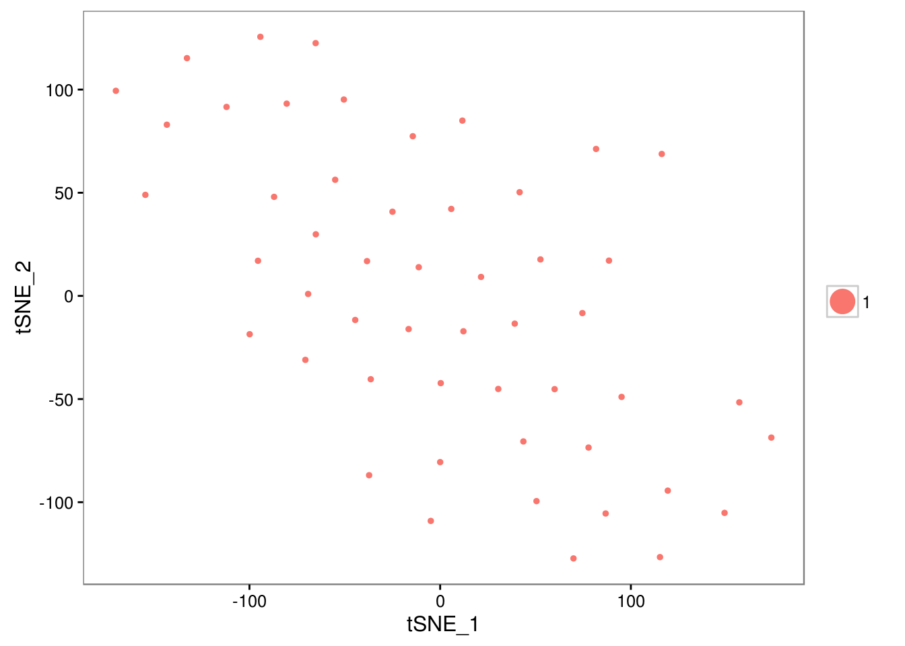

17 Clustering example
library(scRNA.seq.funcs)
library(pcaMethods)
library(pcaReduce)
library(Rtsne)
library(SC3)
library(pheatmap)
library(ggplot2)
set.seed(1234567)To illustrate clustering of scRNA-seq data, we consider a dataset of hematopoietic stem cells (HSCs) collected from a patient with myeloproliferative neoplasm (MPN). It is well known that this disease is highly heterogeneous with multiple sub-clones co-existing within the same patient.
17.1 Patient dataset
Traditionally, clonal heterogeneity has been assessed by genotyping sub-clones. Genotyping through Sanger sequencing of two key loci has been carried out for this patient and it has revealed the presence of 3 different sub-clones (WT, WT/Tet2 and Jak2/Tet2). Our goal is to identify clusters corresponding to the three genotypes from the scRNA-seq data.
patient.data <- read.table("clustering/patient.txt", sep = "\t")For convenience we have performed all quality control and normalization steps (SF + RUV) in advance. The dataset contains 51 cells and 8710 genes.
Now we are ready to cluster the data using the methods described in the previous chapter.
17.2 SC3
patient.sceset <- create_sceset(patient.data)
patient.sceset <- calculateQCMetrics(patient.sceset)
patient.sceset <- sc3(patient.sceset, ks = 2:5)
sc3_interactive(patient.sceset)This command will open SC3 in a web browser. Once it is opened please perform the following exercises:
Exercise 1: Explore different clustering solutions for \(k\) from 2 to 5. Also try to change the consensus averaging by checking and unchecking distance and transformation check boxes in the left panel of SC3.
Exercise 2: Based on the genotyping, we strongly believe that \(k =3\) provides the best clustering. What evidence do you find for this in the clustering? How can you use the silhouette plots to motivate choosing the value of \(k\) that you think looks best?
Exercise 3: The solution may change depending on the combination of check-boxes that was used. How similar are the different solutions, and which are the most stable clusterings? You can find out how different cells migrate between clusters using the “Cell Labels” tab panel.
Exercise 4: Calculate differentially expressed genes and marker genes for the obtained clusterings. Please use \(k=3\) and the most stable solution, corresponding to the case when all check boxes are checked.
Exercise 5: Change the marker genes threshold (the default is 0.85) in the right side panel of SC3. Does SC3 find more marker genes?
17.3 pcaReduce
# use the same gene filter as in SC3
input <- scRNA.seq.funcs::gene_filter(patient.data, 0.06)
# log transform before the analysis
input.log <- log2(input + 1)
# run pcaReduce 10 times creating hierarchies from 1 to 30 clusters
pca.red <- pcaReduce::PCAreduce(t(input.log), nbt = 10, q = 30, method = 'S')
res <- unique(scRNA.seq.funcs::merge_pcaReduce_results(pca.red, 3))
pheatmap(res, legend = FALSE, main = "Columns - cells, Rows - clusterings, Colors - clusters")Figure 17.1: Clustering solutions of pcaReduce method after running it for 10 times and selecting \(k=3\)
Exercise 6: Run pcaReduce for \(k=2\), \(k=4\) and \(k=5\). Is it easy to choose the optimal \(k\)?
Hint: When running pcaReduce for different \(k\)s you do not need to rerun pcaReduce::PCAreduce function, just use already calculated pca.red object.
Figure 17.2: Clustering solutions of pcaReduce method after running it for 10 times and selecting \(k=2\).
Figure 17.3: Clustering solutions of pcaReduce method after running it for 10 times and selecting \(k=4\).
Figure 17.4: Clustering solutions of pcaReduce method after running it for 10 times and selecting \(k=5\).
Exercise 7: Compare the results between SC3 and pcaReduce. What is the main difference between the solutions provided by the two different methods?
17.4 tSNE + kmeans
tSNE plots that we saw before (8.3) when used the scater package are made by using the Rtsne and ggplot2 packages. We can create a similar plots explicitly:
tsne_out <- Rtsne::Rtsne(t(input.log), perplexity = 10)
df_to_plot <- as.data.frame(tsne_out$Y)
comps <- colnames(df_to_plot)[1:2]
ggplot2::ggplot(df_to_plot, aes_string(x = comps[1], y = comps[2])) +
geom_point() +
xlab("Dimension 1") +
ylab("Dimension 2") +
theme_bw()Figure 17.5: tSNE map of the patient data
Note that all points on the plot above are black. This is different from what we saw before, when the cells were coloured based on the annotation. Here we do not have any annotation and all cells come from the same batch, therefore all dots are black.
Now we are going to apply k-means clustering algorithm to the cloud of points on the tSNE map. Do you see 2/3/4/5 groups in the cloud?
We will start with \(k=2\):
clusts <- stats::kmeans(tsne_out$Y,
centers = 2,
iter.max = 1e+09,
nstart = 1000)$clust
df_to_plot$clusts <- factor(clusts, levels = unique(clusts))
comps <- colnames(df_to_plot)[1:3]
ggplot2::ggplot(df_to_plot,
aes_string(x = comps[1], y = comps[2], color = comps[3])) +
geom_point() +
xlab("Dimension 1") +
ylab("Dimension 2") +
theme_bw()Figure 17.6: tSNE map of the patient data with 2 colored clusters, identified by the k-means clustering algorithm
Exercise 7: Make the same plots for \(k=3\), \(k=4\) and \(k=5\).
Exercise 8: Compare the results between SC3 and tSNE+kmeans. Can the results be improved by changing the perplexity parameter?
As you may have noticed, both pcaReduce and tSNE+kmeans are stochastic and give different results every time they are run. To get a better overview of the solutions, we need to run the methods multiple times. Here we run tSNE+kmeans clustering 10 times with \(k = 3\) (with perplexity = 10):
tsne.res <- scRNA.seq.funcs::tsne_mult(input.log, 3, 10)
res <- unique(do.call(rbind, tsne.res))Exercise 9: Visualize the different clustering solutions using a heatmap. Then run tSNE+kmeans algorithm with \(k = 2\) or \(k = 4\) and see how the clustering looks like in these cases.
Figure 17.7: Clustering solutions of tSNE+kmeans method after running it for 10 times and using \(k=3\)
Figure 17.8: Clustering solutions of tSNE+kmeans method after running it for 10 times and using \(k=2\)
Figure 17.9: Clustering solutions of tSNE+kmeans method after running it for 10 times and using \(k=4\)
17.5 SNN-Cliq
Here we run SNN-cliq with te default parameters provided in the author’s example:
distan <- "euclidean"
par.k <- 3
par.r <- 0.7
par.m <- 0.5
# construct a graph
scRNA.seq.funcs::SNN(
data = t(input.log),
outfile = "snn-cliq.txt",
k = par.k,
distance = distan
)
# find clusters in the graph
snn.res <-
system(
paste0(
"python snn-cliq/Cliq.py ",
"-i snn-cliq.txt ",
"-o res-snn-cliq.txt ",
"-r ", par.r,
" -m ", par.m
),
intern = TRUE
)
cat(paste(snn.res, collapse = "\n"))## input file snn-cliq.txt
## find 8 quasi-cliques
## merged into 2 clusters
## unique assign donesnn.res <- read.table("res-snn-cliq.txt")
# remove files that were created during the analysis
system("rm snn-cliq.txt res-snn-cliq.txt")Exercise 10: How can you characterize the solution identified by SNN-Cliq? Run SNN-Cliq algorithm with different values of k, r, m and distance, and see how the clustering looks like in these cases.
17.6 SINCERA
As mentioned in the previous chapter SINCERA is based on hierarchical clustering. One important thing to keep in mind is that it performs a gene-level z-score transformation before doing clustering:
# perform gene-by-gene per-sample z-score transformation
dat <- apply(input, 1, function(y) scRNA.seq.funcs::z.transform.helper(y))
# hierarchical clustering
dd <- as.dist((1 - cor(t(dat), method = "pearson"))/2)
hc <- hclust(dd, method = "average")If the number of cluster is not known SINCERA can identify k as the minimum height of the hierarchical tree that generates no more than a specified number of singleton clusters (clusters containing only 1 cell)
num.singleton <- 0
kk <- 1
for (i in 2:dim(dat)[2]) {
clusters <- cutree(hc, k = i)
clustersizes <- as.data.frame(table(clusters))
singleton.clusters <- which(clustersizes$Freq < 2)
if (length(singleton.clusters) <= num.singleton) {
kk <- i
} else {
break;
}
}
cat(kk)## 1Exercise 11: Visualize the SINCERA results as a heatmap. How do the results compare to the other methods? What happens if you choose \(k = 3\)?
Our answer:Figure 17.10: Clustering solutions of SINCERA method using \(k=3\)
Exercise 12: Is using the singleton cluster criteria for finding k a good idea?
17.7 SEURAT
Here we follow an example created by the authors of SEURAT. We had to introduce some modifications due to the errors produced by the original code:
library(Seurat)
# Create a SEURAT object
d <- new("seurat", raw.data = as.data.frame(log(patient.data + 1)))
# Setup a SEURAT object
d <- setup(
d,
project = "NBT",
min.cells = 3,
names.field = 2,
names.delim = "_",
min.genes = 10,
is.expr = 1
)
# Genes placed into 20 bins based on X-axis (average expression).
# Y-axis is within-bin z-score of log(Variance/mean).
d <- mean.var.plot(
d,
y.cutoff = 2,
x.low.cutoff = 2,
fxn.x = expMean,
fxn.y = logVarDivMean
)
# Run a PCA using the variable genes as input
d <- pca(d, do.print = FALSE, pcs.store = 25)
# Do 200 random samplings to find significant genes,
# each time randomly permute 1% of genes.
# This returns a 'p-value' for each gene in each PC,
# based on how likely the gene/PC score would have been observed by chance
d <- jackStraw(
d,
num.replicate = 200,
do.print = FALSE,
num.pc = 25
)
# Compare the distribution of P-values for each PC with a uniform distribution.
# 'Significant' PCs will have a strong enrichment of genes with low p-values
pAll <- d@jackStraw.empP
pAll$Contig <- rownames(pAll)
pAll.l <- melt(pAll, id.vars = "Contig")
colnames(pAll.l) <- c("Contig", "PC", "Value")
score.df <- NULL
score.thresh=1e-5
for (i in unique(pAll.l$PC)){
q <- qqplot(pAll[, i], runif(1000), plot.it = FALSE)
pc.score <- prop.test(
c(
length(which(pAll[, i] <= score.thresh)),
floor(nrow(pAll) * score.thresh)
),
c(nrow(pAll), nrow(pAll))
)$p.val
if (length(which(pAll[, i] <= score.thresh)) == 0) pc.score <- 1
if(is.null(score.df))
score.df <- data.frame(PC = i, Score = pc.score)
else
score.df <- rbind(score.df, data.frame(PC = i, Score = pc.score))
}
# There are no significant PCs:
head(score.df)## PC Score
## 1 PC1 1
## 2 PC2 1
## 3 PC3 1
## 4 PC4 1
## 5 PC5 1
## 6 PC6 1ndim <- 2
# Project data on a 2D using tSNE
d <- run_tsne(d, dims.use = 1:ndim, max_iter = 2000)
# Find clusters in the tSNE map
d <- DBclust_dimension(
d,
1,
2,
reduction.use = "tsne",
G.use = 8,
set.ident = TRUE
)
tsne.plot(d, pt.size = 1)
Exercise 13: As you can see DBSCAN could find only one cluster. It is known that DBSCAN cannot cluster data sets well with large differences in densities, since the G.use parameter cannot then be chosen appropriately for all clusters. Try to change G.use to be able to find more than one cluster in the data.
Note We found that in general SEURAT does not work well for small datasets (N < 200 cells). For a comprehensive comparisons of the methods please look at the SC3 paper (Kiselev et al. 2016).
References
Kiselev, Vladimir Yu, Kristina Kirschner, Michael T Schaub, Tallulah Andrews, Tamir Chandra, Kedar N Natarajan, Wolf Reik, Mauricio Barahona, Anthony R Green, and Martin Hemberg. 2016. “SC3 - Consensus Clustering of Single-Cell RNA-Seq Data.” BioRxiv.